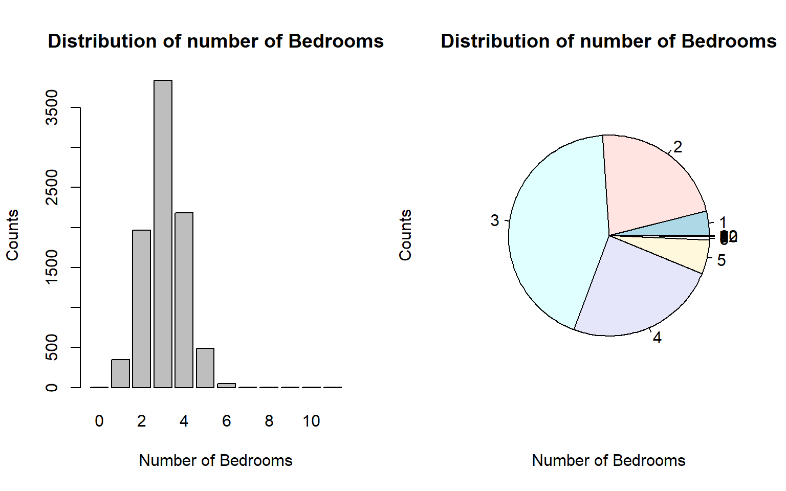

Topic 4 Exploratory Data Analysis (EDA)
The US National Institute of Standards and Technology (NIST) defines EDA as:
An approach/philosophy for data analysis that employs a variety of techniques (mostly graphical) to maximize insight into a data set, uncover underlying structure, extract important variables, detect outliers and anomalies, test underlying assumptions, develop parsimonious models, and determine optimal factor settings.
The term EDA was coined by John Tukey in the 1970s. According to Tukey: “It (EDA) is important to understand what you CAN DO before you learn to measure how WELL you seem to have DONE it… Exploratory data analysis can never be the whole story, but nothing else can serve as the foundation stone – as the first step.
Tukey clearly explains the purpose of EDA. In classical statistics, EDA has been primarily used to inspect the distribution of variables and observe patterns to make hypotheses and test (validating). To be more specific, EDA is for
inspecting the distribution of variables,
detecting (and/or removing) outliers,
examining the trend of variables
assess the associations between variables
The general tools used for EDA in classical statistics are numerical descriptive statistics with basic graphics such as histograms and scatter plots, etc. A cautionary note about EDA is its descriptive nature. EDA is NOT an inferential method.
In Data Science, more EDA tools will be used for feature engineering in order to improve the performance of underlying models and algorithms. This note will systematically outline EDA tools and their applications in both classical statistics and data science.
Working Data Set
For convenience, we use a data set to illustrate the concepts and methods as we proceed. The data set can be found at https://pengdsci.github.io/datasets/MelbourneHousingMarket/MelbourneHousing.csv
MelbourneHousePrice = read.csv("https://pengdsci.github.io/datasets/MelbourneHousingMarket/MelbourneHousing.csv")4.1 Tools of EDA and Applications
This section summarizes the tools of EDA and their applications in both classical statistics and data science.
4.1.1 Descriptive Statistics Approach
This approach uses tables and summarized statistics to uncover the pattern in the data. These patterns include the distribution of feature variables, the correlation between variables, missing values proportions, outliers, etc. Measures such five number summary, quartiles, IQR, and standardization of numerical variables.
R has a powerful function summary() that produces summarized descriptive statistics for every variable in the data set.
## Suburb Address Rooms Type Price Method
## Length:34857 Length:34857 Min. : 1.000 Length:34857 Min. : 85000 Length:34857
## Class :character Class :character 1st Qu.: 2.000 Class :character 1st Qu.: 635000 Class :character
## Mode :character Mode :character Median : 3.000 Mode :character Median : 870000 Mode :character
## Mean : 3.031 Mean : 1050173
## 3rd Qu.: 4.000 3rd Qu.: 1295000
## Max. :16.000 Max. :11200000
## NA's :7610
## SellerG Date Distance Postcode Bedroom2 Bathroom
## Length:34857 Length:34857 Length:34857 Length:34857 Min. : 0.000 Min. : 0.000
## Class :character Class :character Class :character Class :character 1st Qu.: 2.000 1st Qu.: 1.000
## Mode :character Mode :character Mode :character Mode :character Median : 3.000 Median : 2.000
## Mean : 3.085 Mean : 1.625
## 3rd Qu.: 4.000 3rd Qu.: 2.000
## Max. :30.000 Max. :12.000
## NA's :8217 NA's :8226
## Car Landsize BuildingArea YearBuilt CouncilArea Lattitude
## Min. : 0.000 Min. : 0.0 Min. : 0.0 Min. :1196 Length:34857 Min. :-38.19
## 1st Qu.: 1.000 1st Qu.: 224.0 1st Qu.: 102.0 1st Qu.:1940 Class :character 1st Qu.:-37.86
## Median : 2.000 Median : 521.0 Median : 136.0 Median :1970 Mode :character Median :-37.81
## Mean : 1.729 Mean : 593.6 Mean : 160.3 Mean :1965 Mean :-37.81
## 3rd Qu.: 2.000 3rd Qu.: 670.0 3rd Qu.: 188.0 3rd Qu.:2000 3rd Qu.:-37.75
## Max. :26.000 Max. :433014.0 Max. :44515.0 Max. :2106 Max. :-37.39
## NA's :8728 NA's :11810 NA's :21115 NA's :19306 NA's :7976
## Longtitude Regionname Propertycount
## Min. :144.4 Length:34857 Length:34857
## 1st Qu.:144.9 Class :character Class :character
## Median :145.0 Mode :character Mode :character
## Mean :145.0
## 3rd Qu.:145.1
## Max. :145.5
## NA's :7976We observe from the above summary tables that (1) most of the numeric variables have missing values; (2) The distribution of some of these numeric variables is skewed. We will discuss how to use these observations in feature engineering later.
Remarks: Handling missing values in classical statistics is crucial particularly when the sample size is mall. In data science, most of the projects are based on large data sets. Furthermore, the sample is usually not the ransom sample taken from a well-defined population. Therefore, imputing missing values is less important in many data science projects are less important (usually assume missing at random). Next, we delete all records with missing components.
For a categorical variable, we can use a frequency table to display its distribution. For example,
##
## 0 1 2 3 4 5 6 7 8 9 10 12
## 5 348 1965 3837 2183 487 50 5 2 3 1 14.1.2 Graphical Approach
This approach uses basic statistical graphics to visualize the shape of the data to discover the distributional information of variables from the data and the potential relationships between variables. Graphics that are commonly used are histograms, box plots, serial plots, etc.
par(mfrow = c(2,2))
hist(HousePrice$Price, main = "Distribution of House Price")
Suburb = table(HousePrice$Suburb)
barplot(Suburb, main="Suburb Information")
Type = table(HousePrice$Type)
pie(Type, main="Distribution of House Type")
den <- density(HousePrice$Price)
plot(den, frame = FALSE, col = "blue",main = "Density House Prices")We can see We will discuss how to use these observed patterns in feature engineering to yield better results later.
4.1.3 Algorithm-based Method
If there exist some groups (data points clustered), we may want to assign an ID for each group to reduce the overall variations of the data. Including this cluster ID will improve the performance of the underlying model. The clustering algorithm uses a lot of computing resources. As an example, we use the well-known iris data set based on the 4 numerical variables.
iris0 = iris[,-5]
res.hc <- eclust(iris0, "hclust", k = 3)
#fviz_dend(res.hc) # dendrogam fviz_cluster(res.hc) # scatter plotNewIris = iris
NewIris$Cluster = res.hc$cluster4.2 Visual Techniques of EDA
EDA is particularly effective for low-dimensional data. The following discussion will be based on the number and type of variables.
4.2.1 Univariate EDA
- Numerical Variable
The commonly used visual techniques for numerical variables are histograms, density curves, box-plots, serial plots, etc.
par(mfrow = c(2,2))
hist(HousePrice$Price, xlab = "Price", ylab = "count", main = "House Prices")
den=density(HousePrice$Price)
plot(den, xlab = "Price", ylab = "count", main = "House Prices")
##
boxplot(HousePrice$Price, xlab = "Price", ylab = "count", main = "House Prices")
##
# Get the data points in the form of an R vector.
rainfall <- c(799,1174.8,865.1,1334.6,635.4,918.5,685.5,998.6,784.2,985,882.8,1071)
# Convert it to a time series object.
rainfall.timeseries <- ts(rainfall,start = c(2012,1),frequency = 12)
# Plot a graph of the time series.
plot(rainfall.timeseries, ylab = "Rainfall", main = "Rainfall Trend")One can also create a frequency table to look at the distribution.
options(digits = 7)
bound = round(seq(100000,9000000, length=15),1)
as.data.frame(table(cut(HousePrice$Price, breaks=bound)))## Var1 Freq
## 1 (1e+05,7.36e+05] 3101
## 2 (7.36e+05,1.37e+06] 3669
## 3 (1.37e+06,2.01e+06] 1374
## 4 (2.01e+06,2.64e+06] 442
## 5 (2.64e+06,3.28e+06] 172
## 6 (3.28e+06,3.91e+06] 77
## 7 (3.91e+06,4.55e+06] 24
## 8 (4.55e+06,5.19e+06] 11
## 9 (5.19e+06,5.82e+06] 8
## 10 (5.82e+06,6.46e+06] 5
## 11 (6.46e+06,7.09e+06] 1
## 12 (7.09e+06,7.73e+06] 1
## 13 (7.73e+06,8.36e+06] 1
## 14 (8.36e+06,9e+06] 1The above frequency table gives a similar distribution as shown in the histogram and the density curve.
- Categorical Variable
The commonly used visual techniques for numerical variables are bar charts and pie charts.
par(mfrow=c(1,2))
freq.tbl = table(HousePrice$Bedroom2)
barplot(freq.tbl, xlab="Number of Bedrooms", ylab = "Counts", main="Distribution of number of Bedrooms")
pie(freq.tbl, xlab="Number of Bedrooms", ylab = "Counts", main="Distribution of number of Bedrooms")
| Var1 | Freq |
|---|---|
| 0 | 5 |
| 1 | 348 |
| 2 | 1965 |
| 3 | 3837 |
| 4 | 2183 |
| 5 | 487 |
| 6 | 50 |
| 7 | 5 |
| 8 | 2 |
| 9 | 3 |
| 10 | 1 |
| 12 | 1 |
4.2.2 Two Variables
Three different cases involve two variables.
4.2.2.1 Two Numeric Variables
In the case of two numeric variables, the key interest is to look at the potential association between the two. The most effective visual representation is a scatter plot.
The above scatter plot indicates a linear trend between the house price and the building area.
4.2.2.2 Two Categorical Variable
For given two categorical variables, we may be interested in exploring whether they are independent. The two-way table and be used to visualize the potential relationship between the two categorical variables.
## 0 1 2 3 4 5 6 7 8 9 10 12
##
## 1 2 345 1667 1921 255 10 1 0 0 0 0 0
## 2 3 2 295 1788 1495 203 13 1 0 0 0 0
## 3 0 1 3 124 394 206 26 2 1 0 0 0
## 4 0 0 0 4 36 45 9 2 1 0 0 0
## 5 0 0 0 0 3 22 0 0 0 0 0 1
## 6 0 0 0 0 0 1 1 0 0 1 0 0
## 7 0 0 0 0 0 0 0 0 0 1 0 0
## 8 0 0 0 0 0 0 0 0 0 1 0 0
## 9 0 0 0 0 0 0 0 0 0 0 1 0## Warning in chisq.test(HousePrice$Bathroom, HousePrice$Bedroom2): Chi-squared近似算法有可能不准##
## Pearson's Chi-squared test
##
## data: HousePrice$Bathroom and HousePrice$Bedroom2
## X-squared = 20915, df = 88, p-value < 2.2e-16Note that \(\chi^2\) test is sometimes used in EDA.
4.2.2.3 One Numeric Variable and One Categorical Variable
From the modeling point of view, there are two different ways to assess the relationship between a categorical variable and a numerical variable. For example, a ridge plot can be used to visualize the distribution of house prices across the Type of houses.
ggplot(HousePrice, aes(x=Price/10000,y=Type,fill=Type))+
geom_density_ridges_gradient(scale = 4) + theme_ridges() +
scale_y_discrete(expand = c(0.01, 0)) +
scale_x_continuous(expand = c(0.08, 0)) +
labs(x = "Prices",y = "Type") +
ggtitle("Density estimation of prices given Type") +
theme(plot.title = element_text(hjust = 0.5))## Picking joint bandwidth of 6.65The ridge plot is a visual representation of ANOVA.
4.2.3 Three or More Variables
Visualizing the relationship between three or more variables can be challenging. One has to use visual design elements such as line, shape, negative/white space, volume, value, color, and texture — to represent the values of variables.
4.2.3.1 Use of Colors, Movement, and Point-size
In the following example, color, movement, and point size represent continent, time, and population size, respectively. Therefore, it represents the complete relationship of 5 variables.
4.2.3.2 Pairewised Relationship Between Variables
The pair-wise scatter plot numerical variables is the most commonly used in practice. We use the Iris data set as an example to show the pair-wise plot in the following.
The above enhanced pair-wise scatter plot provides a pair-wise comparison between the four numerical variables across the three species (categorical variable).
4.3 Roles of Visualization in EDA
Information visualization displays information in a visual format that makes insights easier to understand for human users. The information in data is usually visualized in a pictorial or graphical form such as charts, graphs, lists, maps, and comprehensive dashboards that combine these multiple formats.
4.3.1 Data Visualization
The primary objective of data visualization is to clearly communicate what the data says, help explain trends and statistics, and show patterns that would otherwise be impossible to see. Data visualization is used to make consuming, interpreting, and understanding data as simple as possible, and to make it easier to derive insights from data.
4.3.2 Visual Analytics
Visual analytics is an emerging area in analytics. It is more than visualization. Interactive exploration and automatic visual manipulation play a central role in visual analytics.
Visual analytics does the **heavy lifting*”** with data, by using a variety of tools and technologies — machine learning and mathematical algorithms, statistical models, cutting-edge software programs, etc — to identify and reveal patterns and trends. It prepares the data for the process of data visualization, thereby enabling users to examine data, understand what it means, interpret the patterns it highlights, and help them find meaning and gain useful insights from complex data sets.
In other words, using visual analytic methods and techniques can enhance (data) visualization and improve the performance of analysis and modeling. Interactive visualization technology enables the exploration of data via the manipulation of chart images, with the color, brightness, size, shape, and motion of visual objects representing aspects of the data set being analyzed. The following is such an example (https://vizhub.healthdata.org/cod/).